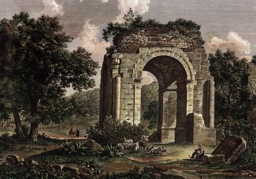
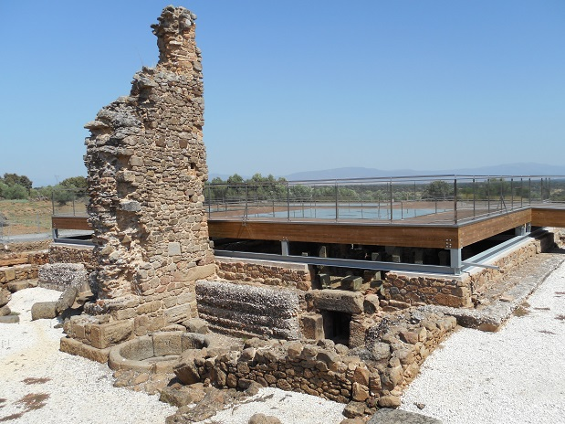
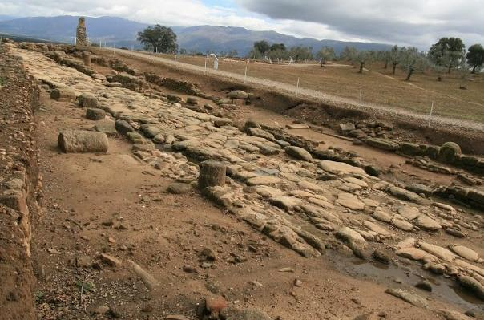
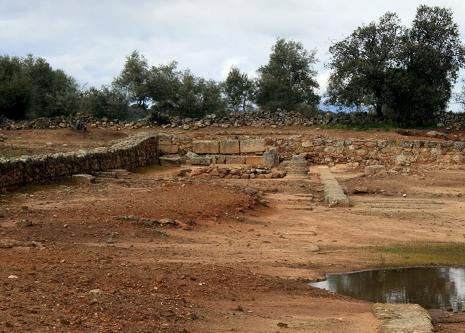
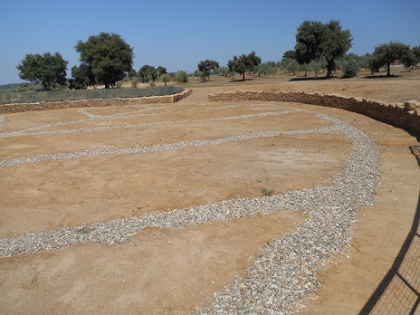
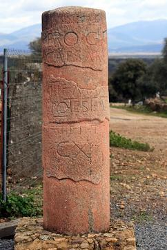

|
C Á P A R R A

La ciudad romana de Cáparra se sitúa al norte de la provincia de Cáceres, ocupando los términos municipales de Oliva de Plasencia y Guijo de Granadilla. Citada en la antigüedad como Capera o Capara, el momento de su fundación resulta incierto, relacionado con asentamientos indígenas. Ciudad de origen Vetón, estipendiaria de Roma. A principios del siglo I como otras ciudades hispanas obtuvo la condición de municipio en el 74, Municipium Flavium Caparense. Es con Vespasiano cuando se construyen el arco y la mayoría de los edificios de la ciudad.
Paso obligado en la vía de la Plata, al constituirse una mansio. Cáparra fue una ciudad amurallada, tenían una altura de hasta 5m, y una anchura de 3,20m. En el s. XVI al XVIII se habla de ella y de la existencia todavía entonces de una puerta con su correspondiente arco que estaba situada en la entrada sur de la ciudad. Esta puerta llamada en algunos documentos puerta de la villa y en otros arco triunfal, se conservó hasta el año 1728 en que fue destruida para obtener piedra para una ermita en Guijo de Granadilla. Hay dos puertas en la ciudad. La puerta de la ciudad o puertas sureste, se localiza en el decumanus máximo, Vía de la Plata. Puerta de un solo vano y dos torres de planta cuadrangular rematadas en semicírculo. Y la puerta suroeste que estaba flanqueada por dos torreones defensivos semicirculares acoplados a la muralla.
Se conservan dos insulaes con fachada al decumanus máximus y una gran domus que ocupa una gran manzana de1.100m2
Las Termas Las termas públicas se localizan en el extremo noroeste de la ciudad, junto al decumanus máximus. Su primera fase de construcción corresponde a época Flavia, cuando la ciudad obtiene el rango de municipium. Por el lado sur está la palestra, y por el lado norte hay varias tabernae, que pueden atribuirse a almacenes de leña u oficinas administrativas. Se accedía por el lado oeste, por una de las calles que confluían al decumano, paralela al cardo principal.

Ver Termas romanas
Acueducto Según una inscripción encontrada entre el anfiteatro y el arco, pudiera haber existido un acueducto que trajera las aguas desde la sierra de La Cabrera, dirección hacia la que partía una cañería de plomo que fue hallada en 1710, cuando se plantaban unos olivos.
El Arco El Tetrapylum, arco romano de Cáparra, que significa "cuatro puertas" aparece en contexto relacionado con el foro y sus entradas junto a la calzada vía de la plata. Único en España. Tiene unas medidas de 8,60 m por 7,35 m, estimándose una altura de 13,30 m en su estado originario. El monumento se eleva sobre cuatro pilares que soportan cuatro arcos de medio punto adornados con una arquivolta o moldura que envuelve el trasdós. Ver Arcos Triunfales
La Calzada La ciudad está situada en una posición estratégica dentro de la provincia de la Lusitania. La calzada coincide con el decumanus máximus, que pasaba bajo el arco de Cáparra. Su organización urbana responde a un planteamiento octogonal cuyo eje principal sería la Vía de la Plata.
 Ver Calzadas Romanas
Los Templos y el Foro El área de los templos se sitúa a la izquierda del arco. La zona mejor conocida es el foro, al que se accedía a través de tres puertas. Se han hallado los restos de lo que podía ser la basílica y la curia. Al fondo se sitúan los tres templos, que constituirían el capitolio. El templo principal es el templo de Júpiter. Existe otro edificio que parece corresponder a un aedes dedicado al culto imperial.

Anfiteatro A poca distancia de la entrada del museo se localiza el anfiteatro con el que contó la ciudad. Construido con opus incertum, contaba con cuatro puertas de acceso. Posiblemente fue construido en el siglo I y sufrió muchas remodelaciones. Se localizaba fuera del recinto amurallado.

El Miliario El miliario fue encontrado en las excavaciones de Blázquez (1963) en el cual se lee CX, exactamente las millas que hay en el itinerario desde Emérita Augusta a Cáparra. Se encontró fragmentado en tres trozos. Se ha datado en el año 58 en que Nerón desempeñó la potestas tribunitia por quinta vez.

Las excavaciones actualmente están paradas, pero se sabe que hay muchos tesoros en su subsuelo, un teatro a extramuros, arquitectura domestica y elementos de tipo escultórico y decorativo. Todos los años se celebra la fiesta romana de la primavera "Floralia”.
Ver Video
|
| CIUDADES HISPANIA | EXTREMADURA ROMANA | TOPÓNIMOS |
|
|